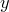
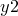
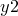

Arrows may be placed on plots using the set arrow command. A simple example would be:
set arrow 1 from 0,0 to 1,1
The number 1 immediately following set arrow specifies an identification number for the arrow, allowing it to be subsequently removed via the command:
unset arrow 1
or equivalently, via:
set noarrow 1
The set arrow command can be followed by the keyword with to specify the style of the arrow. For example, the keywords nohead, head and twohead, placed after the keyword with, can be used to generate arrows with no arrow heads, normal arrow heads, or two arrow heads. twoway is an alias for twohead. For example:
set arrow 1 from 0,0 to 1,1 with nohead
Line types and colours can also be specified after the keyword with:
set arrow 1 from 0,0 to 1,1 with nohead \ linetype 1 c blue
As in Gnuplot, the co-ordinates for the start and end points of the arrow can be specified in a range of co-ordinate systems. The co-ordinate system to be used should be specified immediately before the co-ordinate value. The default system, first measures the graph using the - and -axes. The second system uses the  - and -axes. The screen and graph systems both measure in centimetres from the origin of the graph. In the following example, we use these specifiers, and specify co-ordinates using variables rather than doing so explicitly:
- and -axes. The screen and graph systems both measure in centimetres from the origin of the graph. In the following example, we use these specifiers, and specify co-ordinates using variables rather than doing so explicitly:
x0 = 0.0
y0 = 0.0
x1 = 1.0
y1 = 1.0
set arrow 1 from first x0, first y0 \
to screen x1, screen y1 \
with nohead
In addition to these four options, which are those available in Gnuplot, the syntax ‘axisn’ may also be used, to use the th - or -axis – for example, ‘axis3’. This allows arrows to reference any arbitrary axis on plots which make use of large numbers of parallel axes (see Section 4.5).